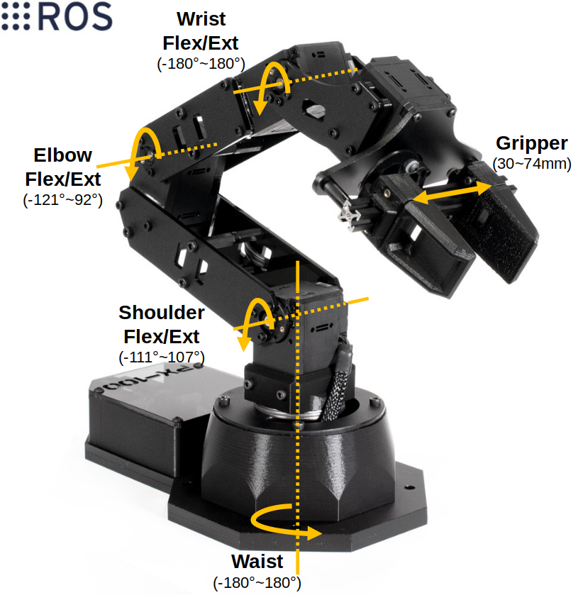

Skills:
Time:
Myo, ROS, MoveIt!, PincherX 100
Summer, 2021
The goal of this project is to control a PincherX 100 Robot Arm using two Myo armbands. The joints of the robot are controlled through right arm shoulder and elbow. The gripper is controlled through right-hand gestures. Running the project allows a user to grab and place an object that is close by. This project also provides an option to customize robot command frequency so that the user can move the robot at a comfortable speed.
To fully simulate right arm motion, two myo armbands are placed on a subject (one on lower, and one on upper right arm). Then, given orientation messages from the myos, this project maps each arm to one robot joint. PincherX 100 has 5 dof (including its gripper). Each of them maps to waist, shoulder, elbow, wrist, and gripper/hand joints respectivley. Having this project runs successfully suggests that a similar algorithms can be applied to higher dof robot arm. Instead of mapping joint to joint, one can have more options in the controlling scheme such as making use of rotation of arm (i.e. roll angle).
The table below explains the controlling process. The angles mentioned are radian differences between previous and current readings. A key concept in this project is to listen to orientation and control robot in a relative manner. When initialized, the robot starts at its HOME position. From there, the relative motion from previous to current reading moves the robot from current to its next position. In other words, the command angles sent to the robot are sums of the tf transofrmations (listening at 50Hz) recorded during a period of time. Besides subscribing to tf frames, this project listens to right-hand gesture predictions. The primarly model is trained using long-term myo library . The model used in this project is trained from subject_0 and five gestures: rest, wrist flexion, forearm pronation & wrist extension , radial deviation, and ulnar deviation. These gestures are selected so that they will not be easily confused with each other. Nonetheless, given the limited amount of dataset, the default classifier is used as a confirmation of whether the predicted gesture is correct. Similar to calculating controlling angles, the predictions are recorded in the same period of time and a dominant gesture (one that exists in 90% of the recording) is found before generating commands. When the upper biceps are activated, control gains of waist, shoulder, and elbow joints are lowered to enable more precise control. Being activated means that mean plus standard deviaiton of sEMG readings from the upper myo exceeds certain threshold, which is defined as the sEMG mean plus standard deviation when arm is at rest.
PincherX 100 has 5 dof (including its gripper). Having this project runs successfully suggests that a similar algorithms can be applied to higher dof robot arm. Instead of mapping joint to joint, one can have more options in the controlling scheme such as making use of rotation of arm.
The image below shows a demonstration of two myos simulating right arm movements. The purple IMU and yellow Pose belongs to lower myo. The orange IMU and green Pose belongs to upper myo. While developing tf from myo messages, I found that the simulated arms are often misaligned. The degree of mis-alignment is random, but it is likely due to random wearing location of the myos. Since it is impossible to wear the sensors at the exact same location, an align service is setup to add in some threshold and to align the simulated arms.

While connecting to two myo armbands, the robot first starts at HOME position. Refer to the control scheme table, moving the arm controls the robot's waist, shoulder, and elbow joints; performing wrist extension (WE) or wrist flexion (WF) controls the robot's wrist joint, and performing radial deviation (RD) or ulnar deviation (UD) opens or closes the gripper. MoveIt commands are sent out at 50Hz, and the command angles are computed from tf transforms listening during the past 0.5 seconds. This is a speed I am most comfortable with. Since the commands are blocking, having a short listening period and fast publishing frequency allows the project to catch up with the arm motion without having to execute a long trajectory.

For this project, blocking commands perform better than unblocking commands. Below is an example of running unblocking commands at 50Hz. The concept in control scheme uses relative angles. Given this situation, everytime a current joint poisition is updated in the reality, there is a small shift in radian. Having such error ran at high frequency lets the drifting down behavior dominates the robot controls. Therefore, enable joint-to-joint control to the robot, blocking commands are choosen here. Though the robot motion is not as smooth as the arm movements, setting proper command frequency and listening period will optimize the controls and allow a user to grab and place an object near by as shown above.